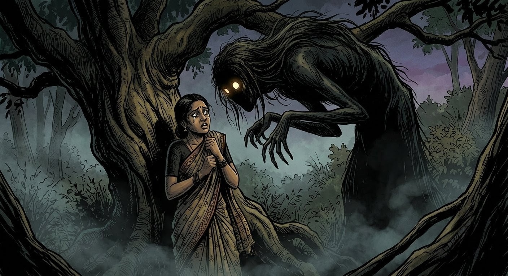
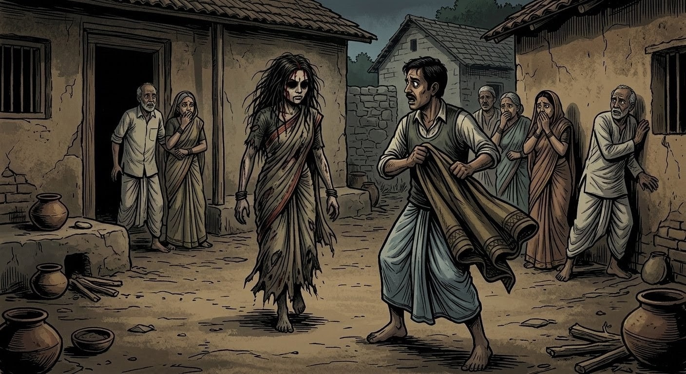
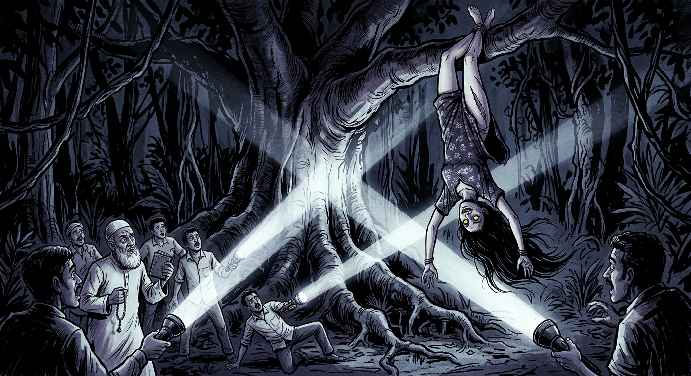

The memory of it still lingers in the hushed corners of Eastern Uttar Pradesh—a tale whispered only when dusk yields to utter blackness.
It began years ago in a sleepy village. Kumari was the epitome of grace: quiet, radiant, and deeply attuned to the traditional rhythms of family life. Though raised in the city, she respected the rooted customs of her ancestral home. When she married Sudeep—a respectable, hardworking man from a neighboring town—their union seemed blessed.
Following their wedding, the couple traveled to Sudeep’s ancestral estate to fulfill post-marital rituals. The vast home was alive with extended family—uncles, aunts, and elders. Out of respect, Kumari maintained the traditional ghunghat, veiling her face in the presence of elders. For two days, harmony reigned.
On the third morning, at 4:30 AM, Kumari awoke. Knowing the household would stir by daybreak, she decided to slip out early to refresh herself. In those days, indoor plumbing was absent; villagers frequented the vast agricultural fields surrounding the perimeter.
Previous mornings, she had accompanied her mother-in-law to a designated clearing. On one occasion, Kumari had casually suggested walking further down the pathway, but her mother-in-law had cut her off with pale, sudden severity: "Do not even speak of going past the northern bend. There is a presence there. The tamarind tree belongs to things that do not rest."
That morning, however, driven by quiet independence, Kumari stepped into the twilight alone. In her rush, she forgot a crucial safeguard: she carried no iron blade or matchbox—traditional wards believed to repel malevolent entities.
The air was dense and cool. As she walked down the familiar dirt track, the landscape seemed to stretch unnaturally. Ten minutes turned into twenty. The surrounding fields blurred into unfamiliar shadows. Realizing she was lost, she ducked behind a thick cluster of wild bushes to finish quickly and turn back.
Then, the silence shattered.
The foliage behind her rustled violently. She turned—nothing. Moments later, a second, furious thrashing tore through the leaves. She froze, suspecting a wild animal. But then, an unnaturally frigid breeze swept past her neck, defying the stifling summer heat.
Before she could react, an oppressive, unseen force began pressing down on her body, pinning her to the damp earth. Paralyzed, her breathing turned to ragged gasps. A chilling sensation washed over her—an eerie, phantom touch from an invisible force on her private parts. She stood up. A heavy object struck her forehead—a pod from a tamarind tree. She looked up.
Rising before her was a towering, monstrous entity. Its unnaturally elongated legs reached high into the canopy. The creature bent its torso downward at an impossible angle, bringing its face inches from hers. It possessed matted, greasy hair, hollow void-like eyes, and a mouth stretched into a jagged, unnatural grin.

Kumari’s mind fractured, and darkness swallowed her whole.
The Return
By 6:30 AM, panic gripped the household. Kumari was missing. Two hours passed, and village elders began whispering cruel assumptions.
Suddenly, a figure emerged from the high crops.
It was Kumari, but stripped of all humanity. Her veil was gone; her clothes were torn, disheveled, and revealing. She marched with a heavy, aggressive, masculine stride. A thin line of blood trickled from her hairline, her eyes wild, hollow, and fixed in a predatory stare.

Sudeep rushed forward with a shawl to cover her exposed frame. The moment he reached out, Kumari seized his head with unnatural strength and slammed her forehead violently into his. Sudeep’s skull fractured with a sickening crack, and he collapsed, bleeding onto the dirt.
Kumari let out a low, guttural chuckle. She strode into the central courtyard, threw her head back, and began contorting her eyes in a grotesque, rhythmic frenzy.
She lunged at the family’s guard dog. Before the animal could react, she sank her teeth into its neck. The maddened hound snapped back, tearing into her forearm. Blood gushed, yet Kumari did not flinch. Her face remained a frozen, terrifying mask of amusement. With a single flick of her wrist, she hurled the heavy dog across the stone yard.
She smashed her way into the inner quarters, kicking a heavy wooden door completely off its iron hinges, locking herself within.
From behind the shattered frame, a demonic, deep male voice boomed in an archaic dialect: "Khol ke dekh, agar himmat hai toh!" ("Open it if you dare!")
When Sudeep begged to know who was inside, the voices multiplied. A child’s mocking giggle echoed, followed by a woman’s weeping, and then the haunting, spectral chords of an invisible veena.
Finally, Sudeep screamed into the keyhole, "What are you?!"
The voice dropped into a terrifying, resonant growl: "I am Khabees!"
Recognizing the entity—an ancient, territorial Jinn known to inhabit tamarind trees—Sudeep sprinted to fetch the local Islamic scholar, the Maulvi.
Through relentless recitations of sacred verses, the Maulvi contained the entity, binding it temporarily. Kumari collapsed to the floor, unconscious.
Hanging Upside Down in the Wilderness
Days later, believing the nightmare had ended, Sudeep moved his wife back to their city apartment. Kumari remembered nothing after entering the fields; only a suffocating sense of dread remained.
Two weeks passed in quiet recovery until a moonless midnight arrived.
At 3:00 AM, Sudeep was jolted awake by a freezing draft. The bedsheets were violently yanked off them by an unseen force. Khabees seized complete control on Kumari’s body, ripping her nightwear badly. Kumari sat rigid beside him, her head tilted at an impossible angle toward the window.
When Sudeep reached for her, she turned. Her eyes were entirely black—void of whites or irises. A multi-tonal rasp tore from her throat:
"You thought a few spoken words could sever a blood-pact?"
Before Sudeep could scream, an invisible force slammed him against the wall, knocking him unconscious. Kumari shattered the glass balcony door and leaped into the night, vanishing into the darkness toward the dense forest reserve at the edge of the city.
Sudeep regained consciousness and summoned a search team of relatives and local authorities. Tracking her footprints deep into the suffocating wilderness, the search dogs suddenly stopped, whimpering and crouching in sheer terror.
The searchlights swept upward through the thick foliage of a massive, ancient tamarind tree.
A collective gasp of horror tore through the group.

Kumari was hanging upside down from a thick, high branch—her ankles twisted unnaturally around the wood, her hair sweeping the dark air like a curtain of shadows. Her eyes snapped open in the beam of the flashlights, reflecting a sickening yellow light. Her lips curled back into a jagged grin as her body swung rhythmically back and forth without any wind.
"Bring the iron! Bring the holy water!" Sudeep screamed, his voice breaking.
The elders and the spiritual practitioner rushed forward, surrounding the base of the tree. They formed a circle, binding the area with holy iron stakes and splashing sanctified oil around the roots. The practitioner began chanting intense, ancient exorcism incantations, his voice ringing through the silent jungle.
The entity inside Kumari thrashed violently. Suspended upside down, her body began to contort into unnatural, bone-breaking angles. She shrieked—a sound so horrifyingly loud and guttural that the searchers clamped their hands over their ears. The spirit spat black bile, roaring in multiple voices at once:
"I will break her neck before I leave!"
"Hold the circle! Do not break the chant!" the practitioner commanded, hurling blessed powders directly at her hanging form.
Smoke rose from her skin as if touched by fire. The tree itself began to tremble violently, leaves raining down as the entity fought the holy binding. The chants grew louder, faster, and more aggressive. Kumari’s throat bulged, her ribs straining under the supernatural battle taking place within her chest.
With one final, ear-splitting scream that shattered the night air, a thick shadow detached itself from her body, coiling upward into the dark canopy before dissipating into thin air.
The tension snapped. Kumari’s limbs went limp, releasing from the branch. The men rushed forward with blankets, catching her bruised, unconscious body just before she hit the ground.
She was alive, breathing softly, the terrifying blackness completely gone from her eyes. The Khabees was driven out, leaving behind only the cold wind whispering through the leaves of the tamarind tree.
← Back to Story's Attic